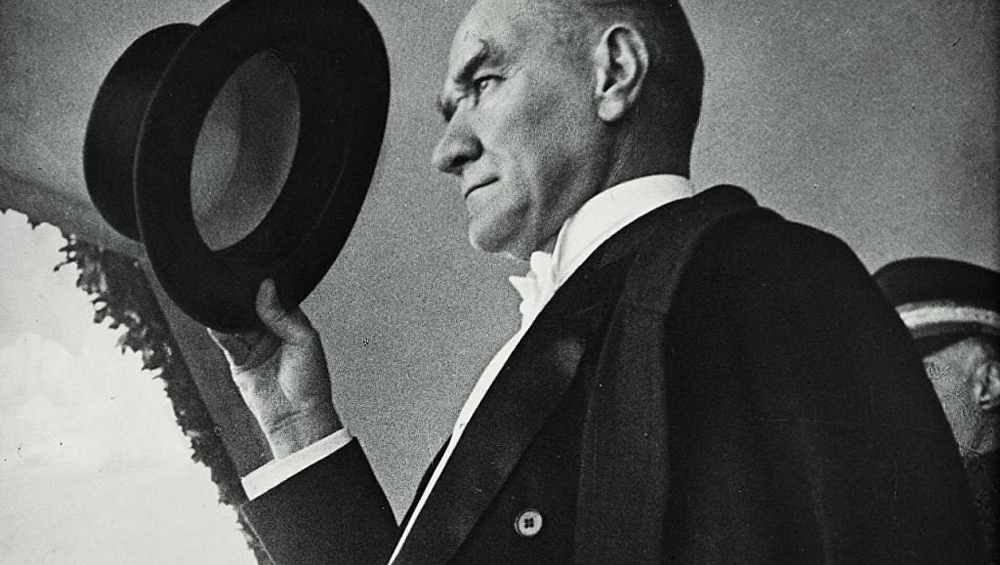

Mustafa Kemal Ataturk
The man who saved a country

"The biggest battle is the war against ignorance."
Here's a time line of M.Kemal Ataturk's life:
- 1881 - Born in Thessaloniki, Greece
- 1905 - Mustafa Kemal graduated from the Military Academy as a Staff Captain and was sent to Damascus to serve in the Fifth Army in Damascus.
- 1906 - Together with his friends, he founded the secret Vatan ve Hürriyet Cemiyeti in Damascus.
- 1909 - He was a staff member of the Action Army to suppress the 31 March Uprising.
- 1911 - Appointed to the General Staff in Istanbul.
- 1911 - Promoted to major.
- 1912 - He led the Battle of Tobruk in Tripoli.
- 1914 - Promoted to lieutenant colonel.
- 1915 - He was promoted to colonel.
- 1920 - He opened the Turkish Grand National Assembly in Ankara.
- 1921 - He directed the Battle of Sakarya.
- 1921 - He was given the rank of marshal and the title of veteran by the Turkish Grand National Assembly.
- 1922 - He led the Great Offensive from Kocatepe.
- 1922 - He won the Battle of the Commander-in-Chief in Dumlupınar.
- 1922 - He saved Izmir from the enemy.
- 1922 - The reign was abolished.
- 1923 - He married Latife Hanım in İzmir.
- 1923 - Izmir Economy Congress was opened.
- 1923 - He was elected as the chairman of the Second Turkish Grand National Assembly.
- 1923 - He founded the People's Party.
- 1923 - Republic proclaimed; He was elected the first president of the Republic of Turkey.
- 1924 - Caliphate abolished
- 1925 - International calendar and time adopted.
- 1927 - He was elected president for the second time.
- 1928 - The law on the adoption of new Turkish letters was enacted.
- 1931 - He was elected president for the third time.
- 1934 - He was given the surname Atatürk.
- 1937 - Hatay's independence was accepted by the League of Nations.
- 1938 - He died in Dolmabahce Palace.
“Such a fundamental change in such a short time in a nation’s history is rarely accomplished… Those who have done this extraordinary work are undoubtedly entitled to have the character of the great man, and so Turkey can be proud to have such a great man.”
-– Eleftherios Venizelos / Prime Minister of Greece